Innovation Mindset
Learn how innovators identify needs, ask better questions, and frame problems clearly.
Summer Course + Workshop
A hybrid academy for motivated rising 9th-12th grade students who want to research real problems, design solutions, present like engineers, and prepare for national STEM competitions.
Program Information
The asynchronous Innovation 101 course introduces the practical process behind real STEM innovation: identifying meaningful problems, researching real-world needs, designing solutions, building a case for impact, and communicating the work clearly.
Students do not need prior research or competition experience. The course is designed for curious, driven students who want to understand how engineers, entrepreneurs, and researchers turn early ideas into projects that can compete and make an impact.
Learn how innovators identify needs, ask better questions, and frame problems clearly.
Practice turning observations, sources, and user needs into useful project direction.
Study how Team Galaxy moved from an early concept to a NASA-recognized innovation project.
Explore how students can connect STEM interests to research, entrepreneurship, and competitions.
Students begin in person, build through virtual workshop sessions, and return for final presentations and feedback.
Meet the cohort at UMD, explore the innovation framework, and begin shaping project ideas.
Daily 10:00 AM-2:00 PM sessions with lessons, guest speakers, mentor feedback, and team work on a presentation about what students learned and their personal innovation plans.
Students present their innovation concepts and receive feedback using a NASA-inspired judging rubric.
Instructors
 Lead Instructor
Lead Instructor
Team Galaxy captain and NASA Dream With Us national podium finisher.
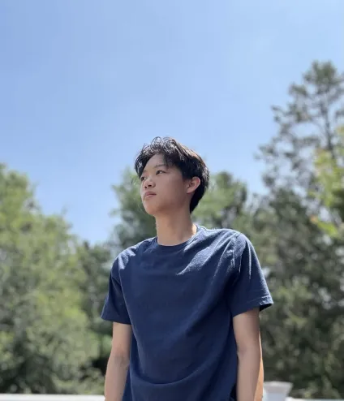
Design + ModelingTeam Galaxy designer with VEX Robotics engineering experience.
 AI + Engineering
AI + Engineering
NASA finalist and STEM workshop instructor focused on real-world solutions.
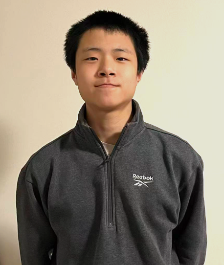
Analysis + Applied MathTeam Galaxy financial analyst with a strong physics and mathematics background.
Guest Speakers
 Regeneron STS Scholar
Regeneron STS Scholar
MIT Chemistry and Biology student, 2024 Regeneron STS Top 300 Scholar, and biomedical research mentor.
 NASA Mission Data Scientist
NASA Mission Data Scientist
Astronomical Data Scientist at STScI leading archive operations for the Roman Space Telescope mission.
Additional speakers and mentors will be announced as the program continues to grow.
Advisors
Program advisor supporting academy planning, student mentorship, and family communication.
Presentation mentor advising students on organizing technical ideas and communicating confidently.
Research advisor supporting the program's connection to scientific research and biomedical innovation.
 Image credit: Eastern Technical High School Instagram
Image credit: Eastern Technical High School InstagramOur Story
Team Galaxy became Maryland's first team to earn a podium finish at NASA's Dream With Us Design Challenge. That achievement came from months of research, design, writing, formatting, and presentation work.
TG Academy of Innovation turns that experience into a student-friendly pathway. Participants study the same habits behind strong innovation projects, then apply them to their own ideas in a guided workshop setting.
Student Outcomes
Team Activity + Connections
These institutions are represented through student experience, research connections, STEM competitions, and academy mentorship.
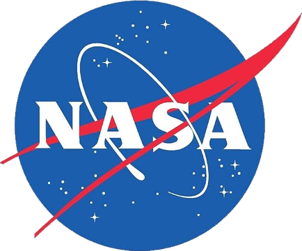
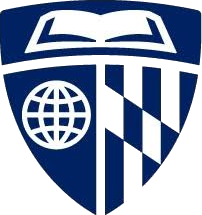
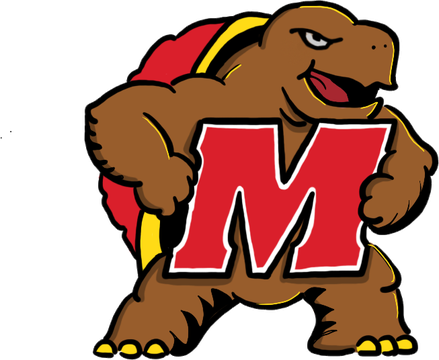
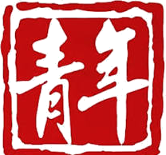
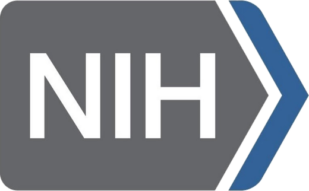
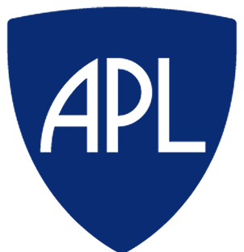
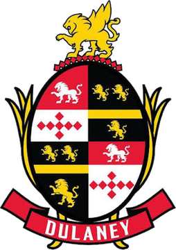
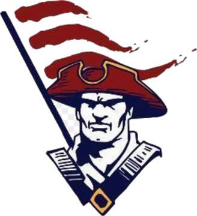
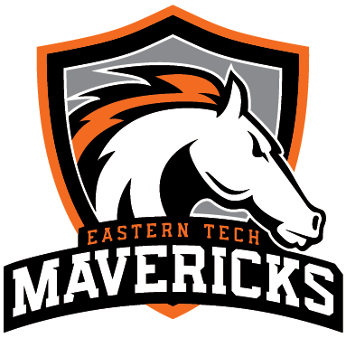
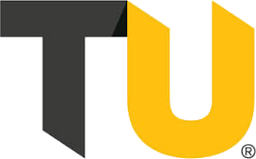
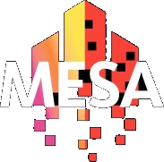
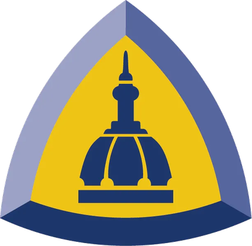
Registration Open
Rising 9th-12th grade students are invited to apply. Questions can be sent to teamgalaxyaoi@gmail.com.
Open Registration Form